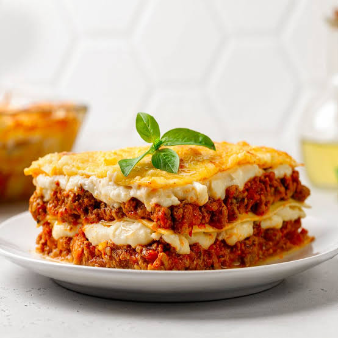

Prato do dia - Lasanha a Bolonhesa
Bem-vindo ao Restaurante do J, um lugar onde a tradição da culinária italiana encontra o sabor e o carinho de uma boa refeição. Nossa especialidade são as massas, preparadas com ingredientes selecionados e aquele toque artesanal que transforma cada prato em uma experiência única.
Do clássico ao especial da casa, nosso cardápio foi pensado para quem aprecia uma comida italiana saborosa, feita com dedicação e cheia de personalidade. Aqui, cada refeição é um convite para reunir a família, encontrar os amigos e aproveitar bons momentos à mesa.
Restaurante do J — massas, sabores e tradição em cada garfada.
